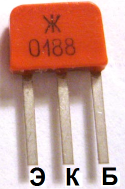

Транзистор КТ361
Транзистор КТ361 - усилительный, p-n-p структуры (прямой), эпитаксиально-планарный, кремниевый. Основное назначение - применение в усилителях высокой частоты. Часто применяется в паре с транзисторами КТ315. Имеет гибкие полосковые выводы и пластмассовый корпус. Тип указывается на упаковке. Весит не более 0,3 г.
Допускается трёхкратный изгиб выводов не ближе 2 мм от корпуса транзистора КТ361 с радиусом закругления 1.5...2 мм.
Минимально допустимое расстояние от места пайки выводов до корпуса - 2 мм.


Рис. 1 - Внешний вид, цоколевка и размеры транзистора КТ361
Электрические параметры транзистора КТ361
Таблица 1
| Коэффициент передачи тока (статический) h21э ( Uкб = 10 В, Iэ = 1 мА) |
|
| Т = +25°C: | |
| КТ361А, КТ361Д | 20...90 |
| КТ361Б, КТ361Г, КТ361Е | 50...350 |
| КТ361В | 40...160 |
| Т = +40°C: | |
| КТ361А, КТ361Д | 20...250 |
| КТ361Б, КТ361Г, КТ361Е | 50...500 |
| КТ361В | 20...300 |
| Т = -60°C: | |
| КТ361А, КТ361Д | 10...90 |
| КТ361Б, КТ361Г, КТ361Е | 15...350 |
| КТ361В | 10...160 |
| Граничная частота коэффициента передачи тока (при Uкэ = 10 В, Iэ = 5 мА) |
не менее 250 МГц |
| Постоянная времени цепи обратной связи, не более (при Iэ = 5 мА, Uкб = 10 В, f = 5 МГц): |
|
| КТ361А, КТ361Б, КТ361Г | 300 пс |
| КТ361В, КТ361Е | 1000 пс |
| КТ361Д | 250 пс |
| Обратный ток коллектора Iкбо, не более (при Uкб = 10 В): |
|
| T = +25 и -60°C | 1 мкА |
| T = +100°C | 25 мкА |
| Обратный ток коллектор-эмиттер, не более (при Rбэ = 10 кОм, Uкэ = Uкэ max) |
1 мкА |
| Ёмкость коллекторного перехода, не более (при Uкб = 10 В): |
|
| КТ361А, КТ361Б | 9 пФ |
| КТ361В, КТ361Г, КТ361Д, КТ361Е | 7 пФ |
| Постоянные напряжения коллектор-эмиттер и коллектор-база (Uкэо(и), Uкбо(и)) (при Rбэ = 10 кОм): |
|
| T ≤ +35°C | |
| КТ361А | 25 В |
| КТ361Б | 20 В |
| КТ361В, КТ361Д | 40 В |
| КТ361Г, КТ361Е | 35 В |
| T = +100°C | |
| КТ361А | 20 В |
| КТ361Б | 15 В |
| КТ361В, КТ361Д | 35 В |
| КТ361Г, КТ361Е | 30 В |
| Постоянное напряжение база- эмиттер Uбэ | 4 В |
| Максимальный ток коллектора (постоянный) | 50 мА |
| КТ361А, КТ361Б, КТ361В, КТ361Г, КТ361Г1 | 100 мА |
| КТ361Д, КТ361Е, КТ361Ж, КТ361И, КТ361К | 50 мА |
| Рассеиваемая мощность коллектора (постоянная) Pк max(т) | |
| при T = ≤ +35°C | 150 мВт |
| при T = +100°C | 30 мВт |
| Температура p-n-перехода | +120°C |
| Рабочая температура (окружающей среды) | -60 ... +100°C |
В диапазоне температур +35...+100°C допустимые значения напряжения К-Э и рассеиваемой мощности снижаются линейно.
Источники:
katod-anod.ru - Транзистор КТ361: КТ361А, КТ361Б, КТ361В, КТ361Г, КТ361Д, КТ361Е